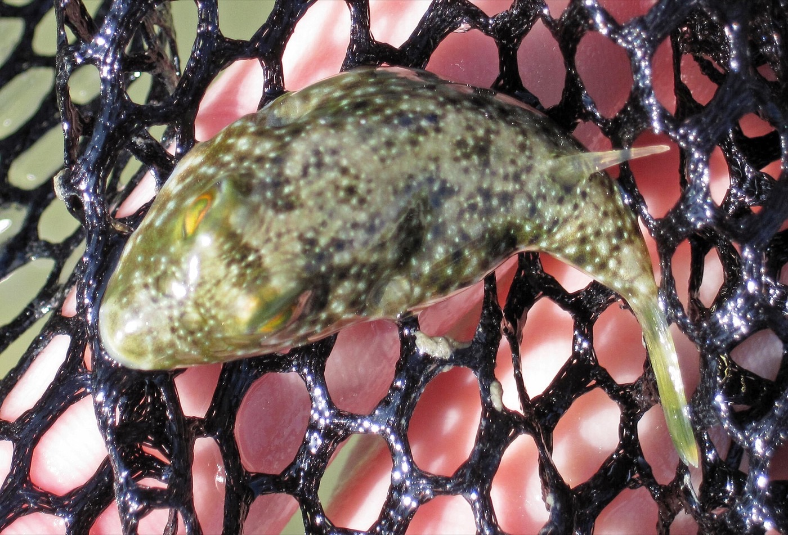
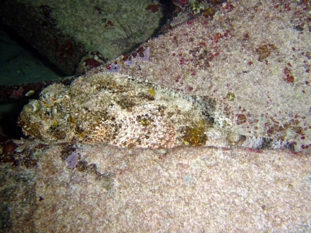
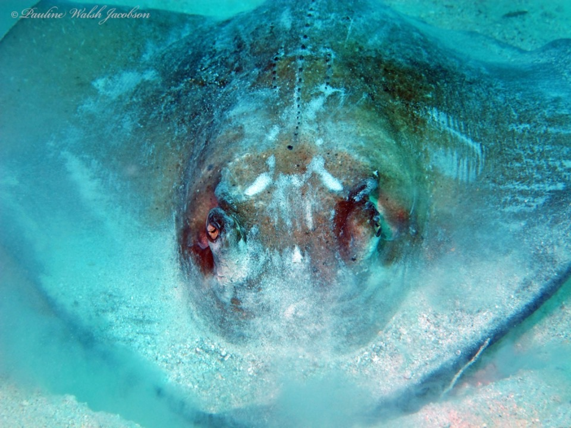
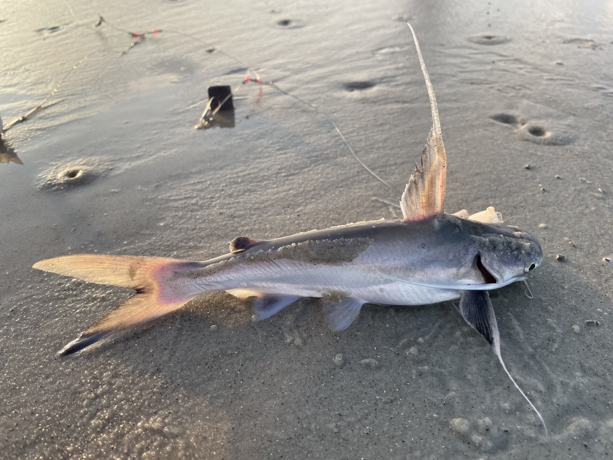

Poisoning happens after eating
Ciguatoxin, tetrodotoxin and histamine can cause serious illness. Several are not destroyed by cooking or freezing.
“Poisonous” and “venomous” are not the same. Some Keys fish can carry toxins when eaten; others inject venom through spines or barbs.
Ciguatoxin, tetrodotoxin and histamine can cause serious illness. Several are not destroyed by cooking or freezing.
Lionfish, scorpionfish, stingrays and saltwater catfish can cause painful puncture wounds. Their flesh is not automatically poisonous.

Do not eatThey can contain tetrodotoxin, a potent neurotoxin concentrated in organs and skin. Cooking, freezing, smoking or pickling does not make it safe.
Practical Keys rule: do not clean or eat a locally caught pufferfish.
 Highest ciguatera concern
Highest ciguatera concernCDC guidance identifies barracuda as a high-risk ciguatera fish and advises never eating it. The toxin cannot be seen, smelled or tasted and survives cooking and freezing.


Grouper, amberjack and snapper can accumulate ciguatoxin. Risk generally increases with a fish’s size and position in the food chain.


These are not naturally poisonous, but poor temperature control can produce scombroid histamine poisoning. Ice them immediately and keep them below 38°F.
 Venomous spines
Venomous spinesUp to 18 dorsal, pelvic and anal spines can sting even after the fish is dead and on ice. The fillets are edible after the spines are safely controlled.

Venomous spinesExcellent camouflage makes them easy to grab accidentally. Do not handle an unidentified bottom fish with bare hands.

Venomous barbShuffle your feet in shallow water and keep clear of the tail when releasing one. The tail barb can cause a deep, contaminated wound.

Fin spinesDorsal and pectoral spines can puncture hands and inject venom. Use a dehooker or secure tool instead of gripping the fish.
Call 911 for breathing trouble, paralysis, collapse, severe weakness or rapidly worsening symptoms. In the United States, call Poison Control: 1-800-222-1222. Save a sample of the fish safely for investigators if possible.
Sources: CDC Yellow Book: Food Poisoning from Marine Toxins and FWC Lionfish Safe Handling. Photograph sources and licenses.